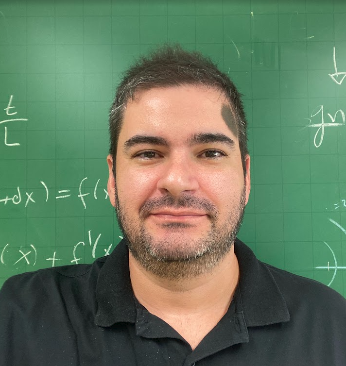

Welcome!

I am an Associate Professor at the University of Campinas.
My research area is the qualitative theory of dynamical systems: Filippov systems, structural stability, systems with symmetries (Hamiltonian and/or reversible-equivariant), existence and stability of limit cycles, Ricci flow on homogeneous manifolds, etc.
My e-mail is: RMiranda [at] unicamp [dot] br
My official webpage is located at: http://www.ime.unicamp.br/~rmiranda/
The above url is not working? If you are my student, please refer to the Moodle page of your course for up-to-date information. For my academic background and publications, you may consult my Currículo Lattesor my MathSciNet page profile. You may also take a look at this PDF version of my CV, although it is slightly outdated.